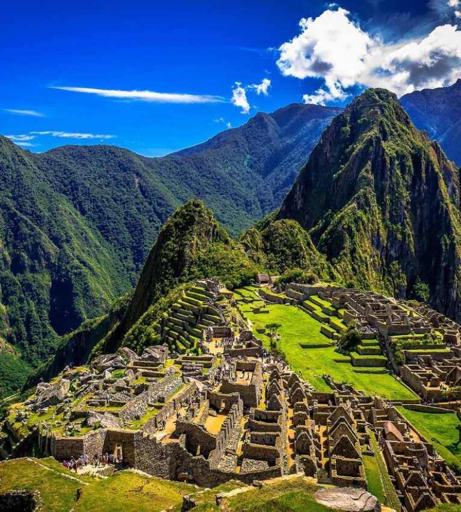
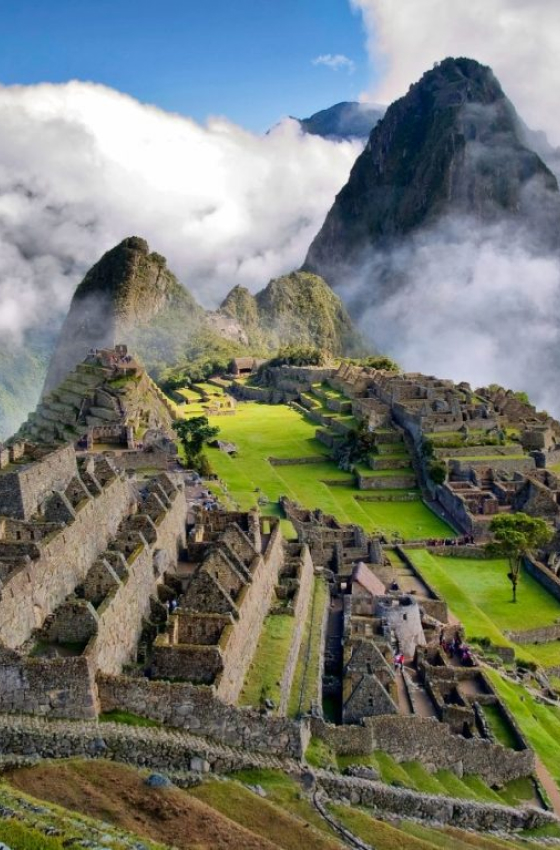
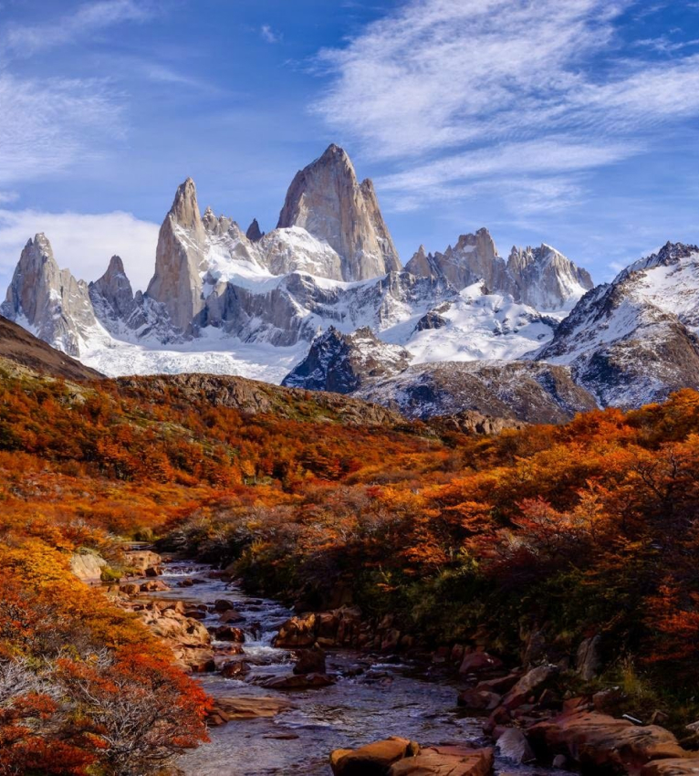
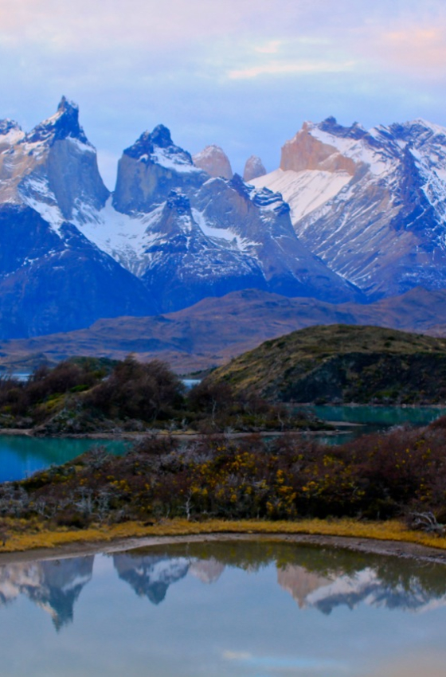
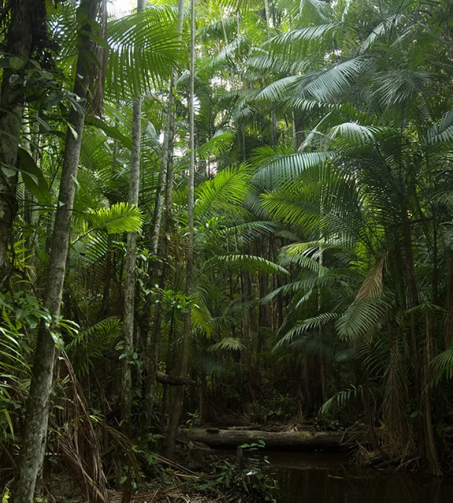
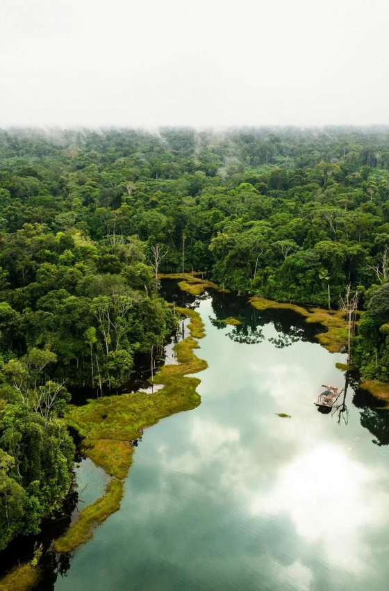

Ofrecemos experiencias de viaje únicas e itinerarios inusuales para disfrutar plenamente de la belleza y
la cultura de América del Sur. ¡Nos encantaría ayudarte a planificar un viaje inolvidable!


Machu Picchu
Nos complace ofrecerle un recorrido nuevo y atractivo por una de las atracciones más famosas de
América del Sur: Machu Picchu. Este increíble lugar está altamente calificado entre los viajeros de
todo el mundo.
Durante el recorrido, realizará un viaje inolvidable a través de la antigua ciudadela inca, ubicada
en lo alto de las montañas de Perú. Su aventura comenzará con un viaje panorámico en tren que cruza
los Andes y ofrece impresionantes vistas panorámicas de la naturaleza circundante.


Patagonia
Tenemos el placer de ofrecerle un viaje caliente y nuevo a la impresionante Patagonia - una de las
áreas naturales más bellas e impresionantes del planeta. Esta tierra salvaje y vasta es muy
apreciada entre los aventureros y verdaderos viajeros.
Durante el recorrido por la Patagonia, realizarás un viaje inolvidable a través de majestuosos
glaciares, picos montañosos y bosques pintorescos. Conocerá la flora y fauna local, incluidos
animales raros como guanacos y pumas, y disfrutará de magníficas vistas panorámicas de montañas,
lagos y glaciares.
Tu aventura incluye caminatas por senderos panorámicos, paseos en bote por glaciares y cruceros por
estrechos rodeados de una naturaleza majestuosa. También visitarás pequeños pueblos de montaña donde
podrás disfrutar de la gastronomía y la cultura local.


Amazónica Exótica
Este nuevo y atractivo recorrido por la selva amazónica será muy valorado entre los aventureros
exóticos. La selva amazónica es un área biodiversa única que alberga muchas especies animales y
vegetales raras y fascinantes.
Durante el recorrido por el Amazonas, realizarás un viaje inolvidable a la reserva forestal, dando
vueltas alrededor del río más poderoso del planeta. Las altas temperaturas y la alta humedad harán
que esta experiencia sea aún más emocionante mientras exploras la espesa vegetación, tocas árboles
centenarios y exploras las vías fluviales en botes y canoas.
Tendrás la oportunidad de conocer a los pueblos indígenas que viven en lo más profundo de la selva y
conocer sus tradiciones y forma de vida. También tendrá la oportunidad de observar especies raras de
animales como monos, jaguares y delfines rosados, así como explorar la diversidad de flora y fauna
que ha encontrado refugio en este ecosistema único.